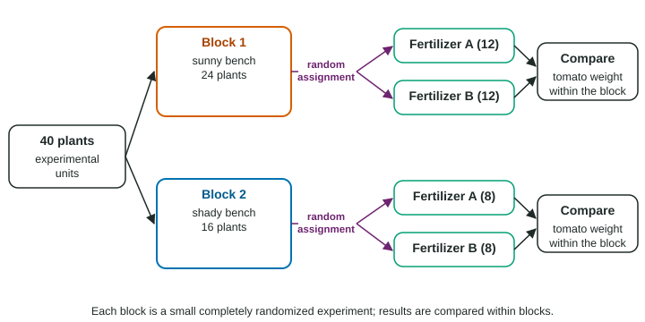

Experimental Design
An experiment imposes treatments on experimental units and measures a response.
Part 1 · Hook
Why this matters
Part 2 · Before you start
What this builds on
Part 3 · Prerequisite check
Quick check before you start
1. What is a confounding variable?
- A variable related to both the explanatory and response variables
- The response variable
- A variable with no effect
- A variable measured twice
Show the answer
Its effect mixes with the explanatory variable’s effect.
- Correct: A variable related to both the explanatory and response variables:
- The response variable:
- A variable with no effect:
- A variable measured twice:
2. Which kind of study can support a cause-and-effect conclusion?
- An experiment with conditions decided by chance
- An observational study
- A sample survey
- A census
Show the answer
Only imposing conditions, decided by chance, rules out confounding.
- Correct: An experiment with conditions decided by chance:
- An observational study:
- A sample survey:
- A census:
Part 4 · See it
See it first

Part 5 · Step by step
How it works, step by step
- Impose two or more treatments, including a control or placebothe comparison shows the effect of the treatment, not of time or expectation
- Let chance assign the treatments to the experimental unitsother variables balance between groups on average, so they cannot explain a difference
- Use enough units per treatment, keep other conditions the same, and blind subjects and evaluatorschance differences average out and expectations do not bias the response
- When the difference in response is too large to be chance (statistically significant)conclude the treatment caused it, for units like these; generalizing needs a random sample
Part 6 · Key ideas
Key ideas
- Experimental units (or subjects) receive treatments, the conditions imposed; the response variable is measured afterward. A control group gets no treatment, a placebo or the standard one.
- Principles: compare treatments, use random assignment, use replication (enough units per treatment), and control other variables. Blinding: single-blind or double-blind.
- Completely randomized design: assign every unit by chance. Randomized block design: group similar units into blocks, randomize within each. Matched pairs: pairs of similar units, or each unit gets both treatments in random order.
- A difference is statistically significant when it is too large to be explained by chance alone. Random assignment allows cause; random sampling allows generalizing.
Part 7 · Misconception
A common mistake
The wrong idea: The gym’s volunteers were randomly assigned, so the result applies to every gym member in the country.
What actually happens: Random assignment supports a cause-and-effect conclusion. Generalizing to a population needs a random sample from it; these were volunteers from one gym.
Part 8 · Check yourself
Check yourself
Exam-style questions. Anything you miss goes into your review queue.
Table
Blue-light glasses and sleep
A researcher recruits 60 college students who volunteer for a sleep study. A random number generator assigns 30 of them to wear glasses that block blue light for two hours before bed, and the other 30 to wear clear glasses that look exactly the same. After two weeks, each student’s sleep quality is scored from a sleep tracker. Neither the students nor the person scoring the trackers knows who wore which glasses (invented study).
1. What are the experimental units?
- The glasses
- The 60 students
- The sleep quality scores
- The sleep trackers worn by the students
Show the answer
Experimental units are the individuals to which treatments are assigned: here the 60 students.
- The glasses: The glasses are the treatments.
- Correct: The 60 students: Right: the units are the individuals the treatments are given to.
- The sleep quality scores: The scores are the response.
- The sleep trackers worn by the students: The trackers measure the response; they are not what the treatments are applied to.
2. What are the treatments, and what is the response variable?
- Treatments: the 60 students. Response: the type of glasses worn
- Treatments: sleep quality scores. Response: the two kinds of glasses
- Treatments: the sleep trackers. Response: the time spent in bed
- Treatments: the two kinds of glasses. Response: sleep quality
Show the answer
A treatment is a condition imposed on the units; the response variable is what is measured afterward.
- Treatments: the 60 students. Response: the type of glasses worn: The students are the experimental units; the glasses are imposed on them.
- Treatments: sleep quality scores. Response: the two kinds of glasses: This reverses them: the glasses are imposed, and sleep is measured.
- Treatments: the sleep trackers. Response: the time spent in bed: The trackers record the response, sleep quality.
- Correct: Treatments: the two kinds of glasses. Response: sleep quality: Right: the researcher imposes the glasses and measures sleep quality.
3. Why do half the students wear clear glasses that look the same?
- To act as a placebo, so both groups believe they may be treated
- To make the study cheaper, since clear glasses cost less
- To make sure that each student sleeps for the same number of hours
- To let the students choose the glasses that they like better
Show the answer
A placebo control group receives a fake treatment, so the placebo effect is the same in both groups and the comparison isolates the real effect.
- Correct: To act as a placebo, so both groups believe they may be treated: Right: any effect of simply wearing glasses, or of expecting better sleep, shows up in both groups.
- To make the study cheaper, since clear glasses cost less: Cost is not the reason; the clear glasses control for the placebo effect.
- To make sure that each student sleeps for the same number of hours: The glasses do not set how long students sleep.
- To let the students choose the glasses that they like better: The glasses are assigned at random, not chosen.
4. Neither the students nor the person scoring the trackers knows who wore which glasses. What is this called?
- A single-blind experiment
- A matched pairs experiment
- A double-blind experiment
- An observational study of sleep
Show the answer
When neither the subjects nor those who interact with them or measure the response know who received which treatment, the experiment is double-blind.
- A single-blind experiment: Single-blind means one side, usually the subjects, does not know; here both sides are kept in the dark.
- A matched pairs experiment: Matched pairs is about pairing units, not about who knows the treatments.
- Correct: A double-blind experiment: Right: both the subjects and the person measuring the response are blind to the treatments.
- An observational study of sleep: The treatments are imposed, so this is an experiment.
5. What does random assignment allow the researcher to conclude?
- The results apply to college students across the country
- Each student’s own sleep will improve with blue-light glasses
- A large difference was likely caused by the glasses
- The two groups were exactly alike before the study began
Show the answer
Random assignment balances other variables between groups on average, so a large difference in the response supports a cause-and-effect conclusion, for units like these.
- The results apply to college students across the country: Generalizing needs a random sample from a population; these are volunteers.
- Each student’s own sleep will improve with blue-light glasses: An experiment compares groups; it does not promise an effect for each person.
- Correct: A large difference was likely caused by the glasses: Right: chance made the groups similar in every other way, on average, so a large difference can be traced to the treatment.
- The two groups were exactly alike before the study began: Random assignment makes groups similar on average, not identical.
6. To test two sunscreens, each of 20 volunteers gets sunscreen A on one arm and B on the other, with a coin flip deciding which arm gets A. What design is this?
- A matched pairs design
- One sunscreen per volunteer
- An observational study
- A cluster sample of arms
Show the answer
Matched pairs: each unit (or each pair of similar units) receives both treatments, with the order or side decided at random.
- Correct: A matched pairs design: Right: each volunteer receives both treatments, one per arm, with chance deciding which arm gets which.
- One sunscreen per volunteer: Here each volunteer gets both sunscreens, one per arm; one sunscreen per volunteer would be a completely randomized design.
- An observational study: The sunscreens are imposed, so this is an experiment.
- A cluster sample of arms: This is about assigning treatments, not sampling.
7. A report says the difference between two treatment groups was statistically significant. What does that mean?
- The difference is large enough to matter in daily life
- The difference is too large to be explained by chance alone
- The study proved that the treatment works for everyone
- The difference was measured very precisely
Show the answer
A statistically significant difference is larger than what chance variation in the random assignment would usually produce.
- The difference is large enough to matter in daily life: Statistically significant is about chance, not about practical size.
- Correct: The difference is too large to be explained by chance alone: Right: random assignment by itself would rarely create a difference this big.
- The study proved that the treatment works for everyone: Statistics gives evidence, not proof, and effects vary between individuals.
- The difference was measured very precisely: Precision of measurement is a separate issue.
Part 9 · Summary
Summary
Part 10 · Up next
What comes next
Part 11 · Connections